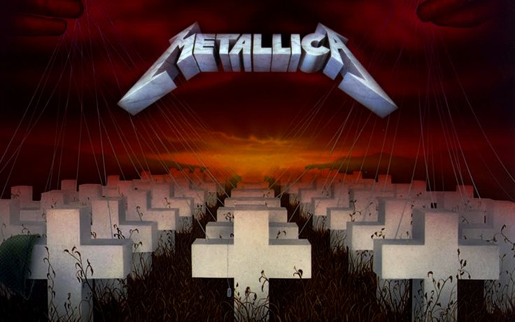

Welcome Home (Sanitarium) Tab

Tuning: E A D G B E
Capo: No capo
[Intro]
__3__
e|-------<12>---------3---3h5h3p2--|-------<12>---------2---2-----3-|
B|-----------<12>------------------|-----------<12>---------0-------|
G|---------------------------------|--------------------------------|
D|---------------------------------|--------------------------------|
A|---------------------------------|--------------------------------|
E|0--------------------------------|0-------------------------------|
e|0------<12>---------------------|-------<12>---------------------|
B|-----------<12>-----------------|-----------<12>-----------------|
G|--------------------------------|--------------------------------|
D|--------------------------------|--------------------------------|
A|--------------------------------|--------------------------------|
E|0-------------------------------|0-------------------------------|
e|-------<12>---------------------|-------<12>---------------------|
B|-----------<12>-----------------|-----------<12>-----------------|
G|--------------------------------|---------------<12>-------------|
D|--------------------------------|--------------------------------|
A|--------------------------------|--------------------------------|
E|0-------------------------------|0-------------------------------|
[Rhy. Fig. 1] (8th=--)
~ ~
e|----------------|------------------|------------| Repeat this figure 4 times
B|----------------|------------------|------------| alone, then 4 times under
G|------0-------0-|------0-----------|------------| the solo and 6 times under
D|----4-------5---|----7-------0-----|--0-----0---| the verse. The notes with
A|--2-------3-----|--5-------4-------|2-----------| a ~ under them are cue notes.
E|0-------0-------|0-------5-----5s3-|----3s5-----| They hardly take time to sound
[Solo 1]
Timing isn't always exact but is close.
e|------------------------------|--------10-s12--15-s17--17------|
B|------------------------------|10-s12--------------------------|
G|--------11--12--9---------12--|--------------------------------|
D|----9-------------------------|--------------------------------|
A|7-----------------------------|--------------------------------|
E|------------------------------|--------------------------------|
e|----------------|
B|----------------|
G|----------------|
D|----------------|
A|----------------|
E|----------------|
__3___
e|--15--15--12--12s14---12^-r---|---12-------------------------|
B|------------------------------|15-----15--13--13---121312----|
G|------------------------------|--------------------------14--|
D|------------------------------|------------------------------|
A|------------------------------|------------------------------|
E|------------------------------|------------------------------|
e|----------------|
B|----------------|
G|12-s11----------|
D|--------12------|
A|------------14--|
E|----------------|
e|------------------------------|----19-----19-------------17--|
B|------------------------------|--17---------17---------------|
G|12s14-------------------------|16-------------16-s14-14------|
D|------------------------------|------------------------------|
A|------------------------------|------------------------------|
E|------------------------------|------------------------------|
e|171514----------|
B|------171514----|
G|------------1614|
D|----------------|
A|----------------|
E|----------------|
__3__
e|----------------------------12|101210----------------5-------|
B|--------------------------13--|------13--12------------------|
G|12^-----r---------------14----|------------------6-----------|
D|----------------------14------|-------------/7----------/5---|
A|------------------------------|------------------------------|
E|------------------------------|------------------------------|
e|----3-----------|
B|----------------|
G|4-----------6---|
D|-------/7-------|
A|----------------|
E|----------------|
[Verses]
(with Rhy. Fig. 1)
1. Welcome to where time stands still, noone leaves and noone will
Moon is full never seems to change, just labeled mentally deranged
Dream the sane thing every night, I see our freedom in my sight
No locked doors, no windows barred , no things to make my brain seem scared
2. Build my fear of what's out there, cannot breath the open air
Whisper things into my brain, assuring me that I'm insane
They think our heads are in their hands, but violent use brings violent plans
Keep him tied, it makes him well, he's getting better can't you tell?
1.Sleep my friend and you will see that dream is my reality
2.No more can they keep us in, listen damn it we will win
e|----------------|----------------|--------|
B|----------------|----------------|--------|
G|----------------|----------------|--------| 8th=--
D|----------------|----------------|--------|
A|----2-2-----3-3-|----5-5---------|--------|
E|0-0-----0-0-----|0-0-----5-5-5-3-|3-3-5-3-|
1.Keep me locked up in this cage, can't they see it's why my brain says rage?
2.They see it right, they see it well, but they think this saves from our hell
e|----------------|----------------|--------|
B|----------------|----------------|--------|
G|----------------|----------------|--------|8th=--
D|----------------|----------------|--------|
A|----2-2-----3-3-|----5-5---------|--------|
E|0-0-----0-0-----|0-0-----5-5-5-3-|3-3-5-3-|
[Chorus]
Sa - ni -
e|--------------------------------|--------------------------------|
B|--------------------------------|--------------------------------|
G|--------------------5s4-----5s4-|----------------_3_-------------|
D|------------5s4-----5s4-----5s4-|----------------020-------------|
A|------------5s4-----3s2-----3s2-|--------------------3-2---------|
E|0-------x-x-3s2-x-x-----x-x-----|------------------------5-3-2-3-|
tarium leave me
e|--------------------------------|--------------------------------|
B|--------------------------------|--------------------------------|
G|--------------------5s4-----5s4-|--------------------------------|
D|------------5s4-----5s4-----5s4-|--------------------------------|
A|------------5s4-----3s2-----3s2-|----2-2-2-2-2-2-3-2-------x-3---|
E|0-------x-x-3s2-x-x-----x-x-----|--------------------3-----x-1---|
be Sa - ni -
e|--------------------------------|--------------------------------|
B|--------------------------------|--------------------------------|
G|--------------------5s4-----5s4-|----------------_3_-------------|
D|------------5s4-----5s4-----5s4-|----------------020-------------|
A|------------5s4-----3s2-----3s2-|--------------------3-2---------|
E|0-------x-x-3s2-x-x-----x-x-----|------------------------5-3-2-3-|
tarium just leave me alone
e|--------------------------------|----------------------------------| 1st time
B|--------------------------------|----------------------------------| go on with
G|--------------------5s4-----5---|4---------------------------------| the solo
D|------------5s4-----5s4-----5---|4---------------------------------| 2nd time
A|------------5s4-----3s2-----3---|2---------------------------------| skip to
E|0-------x-x-3s2-x-x-----x-x-----|----------------------------------| CODA
[Solo 2]
The backing guitar plays a B chord for the next line and then
goes on 4 times with the backing rhythm of solo 1.
e|----------------------------------------------------------------|
B|--------------------------------------------------------10------|
G|----------------------------------------7---7---9--s11----------|
D|------------------------7---7--s9-------------------------------|
A|--------5---5---7--s9-------------------------------------------|
E|/7--------------------------------------------------------------|
For the next two lines we have two guitars soloing together.
For two notes they play on the same string (high E). In this
case the highest note is indicated above the tablature.
e|--------15--17--19------19------19------------------------------|
B|17--19--------------------------17------------------------------|
G|----------------------------------------------------------------|
D|----------------------------------------------------------------|
A|----------------------------------------------------------------|
E|----------------------------------------------------------------|
e|17-h19-p17------15------17-h19--17--------------17--19p17 17------|
B|19-h20-p19------17------19-h20--19------19------19--20p19 17------|
G|----------------------------------------19------------ -- --------|
D|------------------------------------------------------ -- --------|
A|------------------------------------------------------ -- --------|
E|------------------------------------------------------ -- --------|
e|15------------------------------|
B|--------------------------------|
G|16------------------------------|
D|--------------------------------|
A|--------------------------------|
E|--------------------------------|
e|14^---------------------r-------------------------------14--15--|
B|15^---------------------r-------15------------------------------|
G|----------------------------------------------------------------|
D|----------------------------------------------------------------|
A|----------------------------------------------------------------|
E|----------------------------------------------------------------|
___3____
e|17--15--14--15--14h15p14-----14------------------------------------|
B|--------------------------17------17--17--14--15p14-16--14---------|
G|------------------------------------------------------------16--14-|
D|-------------------------------------------------------------------|
A|-------------------------------------------------------------------|
E|-------------------------------------------------------------------|
e|------|
B|------|
G|14-s12|
D|------|
A|------|
E|------|
e|--------------------------------|
B|--------------------------------|
G|14-p12------12------------------|
D|--------16------16--14--12------|
A|----------------------------16--|
E|--------------------------------|
e|--------------------------------------------------------17------|
B|------------------------------------------------17-s15------15-s|
G|----------------------------------------------------------------|
D|12-h14----------------------------------------------------------|
A|----------------------------------------------------------------|
E|----------------------------------------------------------------|
e|----15----------14----------12----------10----------7-----------|
B|14------14-s12------12-s10------10-s8-------8-s-7-------7-------|
G|------------------------------------------------------------7---|
D|----------------------------------------------------------------|
A|----------------------------------------------------------------|
E|----------------------------------------------------------------|
e|--------------------------------|
B|--------------------------------|
G|----7---9-----9s11------9-------|
D|9-------------~-----------------|
A|--------------------------------|
E|--------------------------------|
e|----------------------------------------------------------------|
B|----------------------------------------------------------------|
G|9---------------------------------------9---9---9-------9-------|
D|----------------------------------------------------------------|
A|----------------------------------------------------------------|
E|----------------------------------------------------------------|
e|------------------------------------------------5---------------|
B|----------------------------------------------------------------|
G|9-------7-------------------------------6-----------------------|
D|----------------5--------------/7----------------------/5-------|
A|----------------------------------------------------------------|
E|----------------------------------------------------------------|
e|--------3-----------------------|
B|--------------------------------|
G|4-----------------------6-------| Now go back and play verse 2.
D|---------------/7---------------|
A|--------------------------------|
E|--------------------------------|
[Tag]
e|----------------|--------------------------------|
B|----------------|--------------------------------|
G|_3_-------------|--------------------5s4-----5---|
D|020-------------|------------5s4-----5s4-----5---|
A|----3-2---------|------------5s4-----3s2-----3---|
E|--------5-3-2-3-|0-------x-x-3s2-x-x-----x-x-----|
e|--------------------------------|----------------|----------|
B|--------------------------------|----------------|----------|
G|4-------------------------------|_3_-------------|----------|
D|4-------------------------------|020-------------|2---------|
A|2-------------------------------|----3-2---------|2---------|
E|--------------------------------|--------5-3-2-3-|0---------|
This last E chord lasts rather long for Metallica, while the song
doubles its tempo and the lyrics go "Just leave me alone".
Then you make a pick slide down the neck and you go:
e|----------------|----------------|----------------|----------------|
B|----------------|----------------|----------------|----------------|
G|----------------|----------------|----------------|----------------|
D|----------------|----------------|----------------|----------------|
A|----------------|----------------|----------------|----------------|
E|0-0-0-0-0-0-0-0-|0-0-0-0-0-0-0-0-|0-0-0-0-0-0-0-0-|0-0-0-0-0-0-0-0-|
e|----------------|----------------|----------------|----------------|
B|----------------|----------------|----------------|----------------|
G|----------------|----------------|----------------|----------------|
D|0h2---0h2-------|----------------|0h1---0h1---0h1-|--0h2-----------|
A|0h2---0h2-------|----------------|0h1---0h1---0h1-|--0h2-----------|
E|----------0-0-0-|0-0-0-0-0-0-0-0-|----------------|------0-0-0-0-0-|
[Rhy. Fig. 2] (end Rhy.Fig. 2)
e|----------------|----------------|----------------|----------------|
B|----------------|----------------|----------------|----------------| Repeat
G|----------------|----------------|----------------|----------------| this
D|0h1---0h1-------|----------------|0h1---0h1---0h1-|--0h2-----------| line
A|0h1---0h1-------|----------------|0h1---0h1---0h1-|--0h2-----------| 3 times
E|----------0-0-0-|0-0-0-0-0-0-0-0-|----------------|------0-0-0-0-0-|
Fear of living on Natives getting rest-
e|--------------------------------|--------------------------------|
B|--------------------------------|--------------------------------|
G|--------------------------------|------7-7-----------------------|
D|0-2---2-2-----------------------|0-2---7-7-----------------------|
A|0-2---2-2-----------------------|0-2---5-5-----------------------|
E|------0-0-----------------------|--------------------------------|
less now mutiny in the air got some death to do
e|--------------------------------|--------------------------------|
B|--------------------------------|--------------------------------|
G|--------------------------------|------5-5-------------4-4-------|
D|0-2---3-3-----------------------|0-2---5-5-------5-4---4-4-------|
A|0-2---3-3-----------------------|0-2---3-3-------3-2---2-2-------|
E|------1-1-----------------------|--------------------------------|
Mirror stares back hard "Kill" it's such a friend-
e|--------------------------------|--------------------------------|
B|--------------------------------|--------------------------------|
G|--------------------------------|------7-7-----------------------|
D|0-2---2-2-----------------------|0-2---7-7-----------------------|
A|0-2---2-2-----------------------|0-2---5-5-----------------------|
E|------0-0-----------------------|--------------------------------|
ly word Seems the only way for reaching out again
e|--------------------------------|--------------------------------|
B|--------------------------------|--------------------------------|
G|--------------------------------|------5-5-------------4-4-------|
D|0-2---3-3-----------------------|0-2---5-5-------5-4---4-4-------|
A|0-2---3-3-----------------------|0-2---3-3-------3-2---2-2-------|
E|------1-1-----------------------|--------------------------------|
e|--------------------------------|
B|--------------------------------|
G|--------------------------------|
D|--------------------------------|
A|--------------------------------|
E|0-0-0-0-0-0-0-0-0-0-0-0-12\-----|
[Rhy. Fig. 2] (x4)
Now we have another solo played over Rhy. Fig. 2 (4 times)
e|----------------------------------------------------------------|
B|----------------------------------------------------------------|
G|12--12--12--12--12--12--12--12--12--12--12--12--12--12--12--12--|
D|----------------------------------------------------------------|
A|----------------------------------------------------------------|
E|----------------------------------------------------------------|
e|----------------------------------------------------------------|
B|----------------------------------------------------------------|
G|16--12--12--12--12--12--12--12--12--12--12--12--12--12--12--12--|
D|----------------------------------------------------------------|
A|----------------------------------------------------------------|
E|----------------------------------------------------------------|
e|------------------------------------------------------------12--|
B|--------------------------------13--12--12--12--15--12--12------|
G|14--12--12--12--16--12--12--12----------------------------------|
D|----------------------------------------------------------------|
A|----------------------------------------------------------------|
E|----------------------------------------------------------------|
______3_______
e|13--12--12--12--15----12----12--17\---------------------12------|
B|-----------------------------------------------/12--------------|
G|----------------------------------------------------------------|
D|----------------------------------------------------------------|
A|----------------------------------------------------------------|
E|----------------------------------------------------------------|
e|17-p15-p12--------------12------17-p15-p12----------------------|
B|----------------17-p15--------------------------17-p15-p12------|
G|----------------------------------------------------------------|
D|----------------------------------------------------------------|
A|----------------------------------------------------------------|
E|----------------------------------------------------------------|
e|17-p15-p12--------------12------17-p15-p12--------------12------|
B|----------------17-p15--------------------------15-p12----------|
G|----------------------------------------------------------------|
D|----------------------------------------------------------------|
A|----------------------------------------------------------------|
E|----------------------------------------------------------------|
______3_______
e|17^---------------------r-------^---------------------17----15--|
B|------------------------------------------------17--------------|
G|----------------------------------------------------------------|
D|----------------------------------------------------------------|
A|----------------------------------------------------------------|
E|----------------------------------------------------------------|
e|14--------------14----------------------------------------------|
B|--------15--------------15--------------------------------------|
G|------------------------------------------------2---------------|
D|--------------------------------------------------------4-------|
A|----------------------------------------------------------------|
E|----------------------------------------------------------------|
e|----------------------------------------------------------------|
B|----------------------------------------------------------------|
G|----------------4-------2---------------2-------4---2-----------|
D|4^------------------------------4-----------------------4-------|
A|----------------------------------------------------------------|
E|----------------------------------------------------------------|
e|----------------------------------------------------------------|
B|----------------------------------------------------------------|
G|--------------------------------------------------------4-------|
D|3-------2---------------2^--------------------------------------|
A|----------------5-----------------------------------------------|
E|----------------------------------------------------------------|
e|----------------------------------------------------------------|
B|----------------5-----------------------5---------------5-------|
G|7^----------------------7^----------------------7^--------------|
D|----------------------------------------------------------------|
A|----------------------------------------------------------------|
E|----------------------------------------------------------------|
e|----------------------------------------------------------------|
B|--------5---------------5-------------------------------12------|
G|7^--------------7^--------------7\--------------14--------------|
D|----------------------------------------------------------------|
A|----------------------------------------------------------------|
E|----------------------------------------------------------------|
____________3__________ ___________3___________
e|--------------------------------15^--------15--------14---------|
B|15^--------15--------12-----------------------------------------|
G|----------------------------------------------------------------|
D|----------------------------------------------------------------|
A|----------------------------------------------------------------|
E|----------------------------------------------------------------|
____________3__________
e|12-------------------12-----------------------------------------|
B|-----------15-------------------15^---------------------17--17--|
G|----------------------------------------------------------------|
D|----------------------------------------------------------------|
A|----------------------------------------------------------------|
E|----------------------------------------------------------------|
e|15----------15--17--15------15--19--17-(15)--s--21------19--22--|
B|----17--18--------------19--------------------------------------|
G|----------------------------------------------------------------|
D|----------------------------------------------------------------|
A|----------------------------------------------------------------|
E|----------------------------------------------------------------|
e|22--19------22--22^-------------22^-----------------------------|
B|--------x-------------------------------------------------------|
G|-------------------------------------------End of solo 3--------|
D|----------------------------------------------------------------|
A|----------------------------------------------------------------|
E|----------------------------------------------------------------|
e|--------------------------------|--------------------------------|
B|--------------------------------|--------------------------------|
G|--------------------R-----------|------7-7-------7---R-----------|
D|0-2---2-2-------2---E-----------|0-2---7-7-------7---E-----------|
A|0-2---2-2-------2---S-----------|0-2---5-5-------5---S-----------|
E|------0-0-------0---T-----------|--------------------T-----------|
For the next part of the song there are 4 guitars playing from time
to time. We are going to use the following:
[Rhy. Fig. 3]
e|--------------------------------|--------------------------------|
B|--------------------------------|--------------------------------|
G|--------------------------------|------7-7-----------------------|
D|0-2---2-2-----------------------|0-2---7-7-----------------------|
A|0-2---2-2-----------------------|0-2---5-5-----------------------|
E|------0-0-----------------------|--------------------------------|
(end Rhy. Fig. 3)
e|--------------------------------|--------------------------------|
B|--------------------------------|--------------------------------|
G|--------------------------------|------5-5-------------4-4-------|
D|0-2---3-3-----------------------|0-2---5-5-------5-4---4-4-------|
A|0-2---3-3-----------------------|0-2---3-3-------3-2---2-2-------|
E|------1-1-----------------------|--------------------------------|
[Riff 1]
e|--------------------------------|--------------------------------|
B|--------------------------------|--------------------------------|
G|--------------------------------|2---------------2-2-2-----2-----|
D|(5)-------------5-5-5-4---5-----|----------------------5---------|
A|(7)-------------7-7-7-6---7-----|9---------------9-9-9-7---9-----|
E|--------------------------------|--------------------------------|
(end Riff 1)
e|--------------------------------|--------------------------------|
B|--------------------------+-----|--------------------------------|
G|----4-5---------5-5-5-7---5-----|--------------------------4-----|
D|5-----------------------------5-|----------------4-4-4-5-------5-|
A|10--9-8---------8-8-8-10--8---7-|----------------6-6-6-7---9---7-|
E|--------------------------+-----|--------------------------------|
Until the end of solo 4 one guitar plays Rhy. Fig. 3, another one
plays the following line.
e|--------------------------------|--------------------------------|
B|--------------------------------|--------------------------------|
G|--------------------------------|--------------------------------|
D|--------------------------------|--------------------------------|
A|------------5-s-7-7-7-5---7-----|9---------------9-9-9-7---9-----|
E|--------------------------------|--------------------------------|
e|--------------------------------|--------------------------------|
B|--------------------------------|--------------------------------|
G|--------------------------------|--------------------------------|
D|--------------------------------|--------------------------------|
A|10--9-8---------8-8-8-10--8---7-|----------------6-6-6-7---9-----|
E|--------------------------+-----|--------------------------------|
e|--------------------------------|--------------------------------|
B|--------------------------------|--------------------------------|
G|--------------------------------|--------------------------------|
D|--------------------------------|--------------------------------|
A|7---------------7-7-7-5---7-----|9---------------9-9-9-7---9---9-|
E|--------------------------------|--------------------------------|
e|--------------------------------|--------------------------------|
B|--------------------------------|--------------------------------|
G|--------------------------------|--------------------------------|
D|--------------------------------|------------------------------5-|
A|10--9-8---------8-8-8-10--8---7-|----------------6-6-6-7---9---7-|
E|--------------------------+-----|--------------------------------|
This last note on 5th fret of D string belongs to another guitar
whose line is tabbed in the upper part of Riff 1. All three
guitars play together Rhy. Fig. 3 and Riff 1 for 2 times, and then
continue for 2 times under the following solo 4.
e|----------------------------------------------------------------|
B|----------------------------------------------------------------|
G|----------------------------------------------------------------|
D|----------------------------------------------------------------|
A|--------------------------------7---7---7---6-------7-----------|
E|/7--------------------------------------------------------------|
e|----------------------------------------------------------------|
B|----------------------------------------------------------------|
G|----------------------------------------------------------------|
D|----------------------------------------------------------------|
A|9-------10--12------------------12--12--12--10------12----------|
E|----------------------------------------------------------------|
e|----------------------------------------------------------------|
B|----------------------------------------------------------------|
G|--------12--------------12------14^---------14^---------14^-----|
D|------------14------14------------------------------------------|
A|12-s14----------------------------------------------------------|
E|----------------------------------------------------------------|
e|----------------------------------------------------------------|
B|--------------------------------12----------12------------------|
G|12------------------------------12----------12------------------|
D|----14------------------14--14------14--14--------------14--14--|
A|----------------------------------------------------------------|
E|----------------------------------------------------------------|
e|----------------------------------------------------------------|
B|12----------12------------------__3___------------------12------|
G|12----------12----------12--14--14^r12--14--14------14----------|
D|----14--14----------14------------------------------------------|
A|----------------------------------------------------------------|
E|----------------------------------------------------------------|
___3____
e|----12----------------------12--15^---------r-----------12h15p12|
B|--------12--15^---------15--------------------------------------|
G|14^-------------------------------------------------------------|
D|----------------------------------------------------------------|
A|----------------------------------------------------------------|
E|----------------------------------------------------------------|
___3____
e|15p12h15----------------------------------------------------------|
B|--------12--------------------------------------------------------|
G|------------14--12------12--14^-r----p12-14--14^-rp12-14--14^-rp12|
D|--------------------14--------------------------------------------|
A|------------------------------------------------------------------|
E|------------------------------------------------------------------|
e|----------------------------------------------------------------|
B|----------------------------------------------------------------|
G|14--14^-rp1214--14^-------------11--11--11--12------14---s--16--|
D|----------------------------------------------------------------|
A|----------------------------------------------------------------|
E|----------------------------------------------------------------|
e|----------------------------------------------------------------|
B|12-----s----17--17----------------------------------------------|
G|----------------------------------------------------------------|
D|------------------------------------End of solo 4---------------|
A|----------------------------------------------------------------|
E|----------------------------------------------------------------|
Together with the note on 12th fret of B string the backing guitars
go as follows until the end of the song.
e|--------------------------------|--------------------------------|
B|--------------------------------|--------------------------------|
G|--------------------------------|------7-7-----------------------|
D|0-2---2-2-----------------------|0-2---7-7-----------------------|
A|0-2---2-2--------------(8)\-----|0-2---5-5--------------(8)\-----|
E|------0-0--------------(6)\-----|-----------------------(6)\-----|
e|--------------------------------|--------------------------------|
B|--------------------------------|--------------------------------|
G|--------------------------------|------5-5-------------4-4-------|
D|0-2---3-3-----------------------|0-2---5-5-------5-4---4-4-------|
A|0-2---3-3--------------(8)\-----|0-2---3-3-------3-2---2-2-------|
E|------1-1--------------(6)\-----|--------------------------------|
e|--------------------------------|--------------------------------|
B|--------------------------------|----------------___3___---------|
G|----------------___3___---------|------7-7-------7--7--7-7-------|
D|0-2---2-2-------2--2--2-2-------|0-2---7-7-------7--7--7-7-------|
A|0-2---2-2-------2--2--2-2-------|0-2---5-5-------5--5--5-5-------|
E|------0-0-------0--0--0-0-------|--------------------------------|
e|--------------------------------|--------------------------------|
B|--------------------------------|----------------___3___---------|
G|----------------___3___---------|------5-5-------4--4--4-4-------|
D|0-2---3-3-------3--3--3-3-------|0-2---5-5-------4--4--4-4-------|
A|0-2---3-3-------3--3--3-3-------|0-2---3-3-------2--2--2-2-------|
E|------1-1-------1--1--1-1-------|--------------------------------|
e|--------------------------------|--------------------------------|
B|___3___---------___3___---------|--------------------------------|
G|4--4--4-4-------4--4--4-4-------|4-------2-----------------------|
D|4--4--4-4-------4--4--4-4-------|4-------2-------5-------4-------|
A|2--2--2-2-------2--2--2-2-------|2-------0-------5-------4-------|
E|--------------------------------|----------------3-------2-------|
e|--------------------------------|--------------------------------|
B|--------------------------------|--------------------------------|
G|--------------------------------|--------------------------------|
D|2-------------------------------|--------------------------------|
A|2-------------------------------|--------------------------------|
E|0-------------------------------|--------------------------------|
e|----|
B|----|
G|----|
D|2\--|
A|2\--|
E|0\--|
*****************************************************************
< > Natural harmonics
~ Cue notes
__3__ Triplets
^ Bend
x Muted string
r Release bend
h Hammer-on
p Pull-off
s Slide
% Pick continuously and rapidly
/ Slide up to the note indicated from a few frets below
\ Slide back a few frets from the note indicated
+ Rapid hammer and pull e.g. 8 = 8 h 10 p 8
****************************************************************